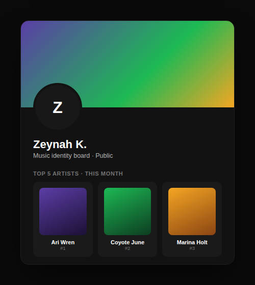

Spotify has some of the best personalisation technology in the industry, and a homepage that barely shows it off. This project asks why — and fixes it.
Before designing anything, I ran a structured business analysis: a competitor comparison against Apple Music, Amazon Music, Deezer, and Last.fm, and a SWOT analysis of Spotify's position.
The comparison made Spotify's real edge clear — not price or audio quality, which competitors largely match, but personalisation. Its recommendation algorithms are consistently regarded as best-in-class. Which made it a genuine usability problem that the homepage undersells exactly that strength:
I pulled real frustrations from Spotify's community forums to ground this in actual complaints, not my own assumptions about what felt cluttered.
A User-Centred Design Canvas — problems, motives, fears, business goals, competitive advantage, candidate solutions — surfaced two things that shaped the redesign directly:
Three interaction design principles the UCD canvas pointed to directly:
Visibility. Content is grouped under bold subheadings — "Made For You," "Your Playlists," "Based on Your Recent Listening" — so personalised content is immediately identifiable instead of blending into a generic scroll.
User control. Every section gets a menu — Pin to top, Sort, Reorganise, Reset to default — so the homepage adapts to the individual instead of showing everyone the same layout. This was the single most important addition.
Feedback. Pinning a section shows immediate confirmation — a "Pinned" flag, the section moving to the top, a toast — which is what makes a customisation feature feel trustworthy rather than uncertain.
Spotify's existing homepage works on a "stream" metaphor — a continuous scroll of tiles. Predictable, but no control and no clear structure.
The redesign shifts this to a magazine-style layout — clearly labelled sections a reader can scan or prioritise — paired with a customisable dashboard metaphor for the pin/reorder controls, similar to rearranging widgets on a home screen. Both are familiar mental models users already bring from other apps, reducing the learning curve for a homepage most people open dozens of times a week.
The initial business analysis actually explored a second opportunity before I settled on the homepage: Spotify's profiles are static and reveal almost nothing about a user's music identity, despite the app clearly knowing exactly what that identity is.
I didn't take this all the way to a full redesign — the homepage was the higher-impact usability problem, and I wanted to see it through properly rather than split focus — but it's worth including because it applies the same underlying insight (Spotify has the data; the interface doesn't show it) to a different surface.

The strongest part of this project is the business thinking underneath it — most "Spotify redesign" projects jump straight to visual opinions about what looks cluttered. This one is grounded in an actual competitive position, real user complaints, and a clear line from business goal to design decision.
What I'd test next: whether the pin/reorder interaction is discoverable without a prompt pointing it out, whether "Reorganise" adds enough value to justify its complexity, and whether the magazine-style labels read as helpful structure or just more text to scan past.